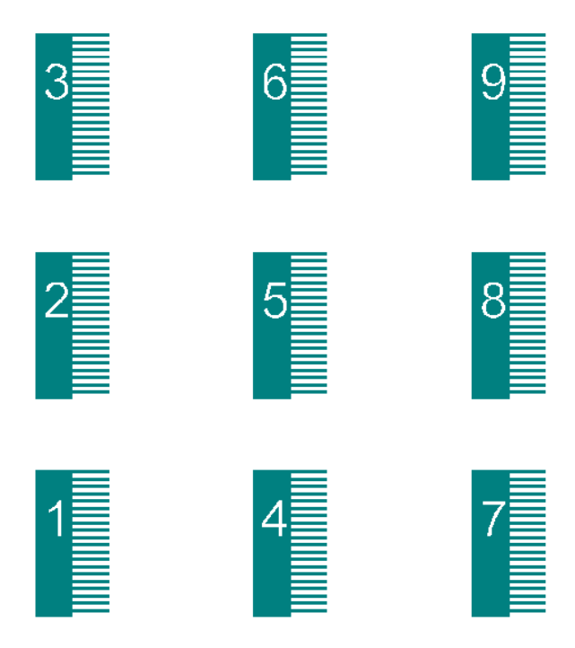

Tutorial : Mask Design in Clewin for lithography process
In the MEMS fabrication process, lithography is required for pattern generation, and for that one has to make a pattern on a glass plate. Which is also called mask writing.
Clewin is a software, developed by the University of Twente, for mask writing. I wanted to make a pattern by coding as it is easy to debug, takes less effort in making small changes, and scalable. So, while making MEMS devices, I did coding for pattern generation, that I am sharing here with you. In the Clewin, there is an option of making a pattern using scripts of C, Matlab, etc. I am using Matlab scripts. Although the command would not run in Matlab, but the structure that is used is similar to Matlab.
I am using only two functions of the Clewin for making the device: 1) polygon 2) text. In the example, I will show a design of one side of the comb drive. Comb Drive is used for sensing and actuation in many MEMS devices such as accelerometer and gyroscope.
The tutorial has been divided into five parts.
- Making a simple block.
- Making a comb finger and make a set of it.
- Making a set, which has both the block and comb fingers.
- Make multiple copies of the device, to populate it on the wafer.
- Making ID on each device, to identify the device later on.
a) Making a simple block.
Select the "Insert Script Objects" option, which is usually in the left-bottom corner. It will open a window, select Matlab script block and on then you can write/paste your Matlab code. Also select the appropriate placement, layer options, and memory buffer, if needed. When the memory buffer is low then the code might not execute, and it will show Clewin data buffer is too small. Defining the four points of the rectangle, the polygon command will create a close filled polygon that passed through those points
A1_TLx = 0;
A1_TLy = 0;
A1_w = 50;
A1_h = 200;
A1 = [[A1_TLx ,A1_TLy ]; [A1_TLx+A1_w ,A1_TLy ]; [A1_TLx+A1_w ,A1_TLy-A1_h ]; [A1_TLx ,A1_TLy-A1_h ]];
polygon(A1);
b) Making a comb finger and make a set of it.
A comb finger can be made by using the same method. To replicate it one can, use transformations and make multiple copies of it. For that, we use some transformation matrix, (reference: https://en.wikipedia.org/wiki/Affine_transformation). To apply transformation like translate, one has to make the matrix of block form nX2 to nX3, where the third column contain all element as unity.
FSF_TLx = A1_TLx+A1_w;
FSF_TLy = A1_TLy;
FSF_w = 50;
FSF_h = 3;
FSF = [[FSF_TLx ,FSF_TLy ]; [FSF_TLx+FSF_w ,FSF_TLy ]; [FSF_TLx+FSF_w ,FSF_TLy-FSF_h ]; [FSF_TLx ,FSF_TLy-FSF_h ]];
polygon(FSF);
n_fsf = 20; xtr_FF =0;
ytr_FF = -10;
%%% making 4X2 matrix into transformation compatible matrix of 4X3 size.
FSF_tr = [FSF ones(length(FSF),1);];
CombFFS = zeros(4*n_fsf,3);
for i = 1:n_fsf
TR_MF = [1 0 0; 0 1 0; xtr_FF*(i-1) ytr_FF*(i-1) 1];
CombFFS(4*i-3:4*i,:) = FSF_tr*TR_MF;
end
CombFFS_dash = [CombFFS(:,1) CombFFS(:,2)]; %% this includes all the fix fingres, starting one also
for i= 1:n_fsf
polygon(CombFFS_dash(4*i-3:4*i,:));
end
c) Making a set, which has both the block and comb fingers.
In this, collecting all the nodes and arrange them to make the device in one go.
%%% Block
A1_TLx = 0;
A1_TLy = 0;
A1_w = 50;
A1_h = 200;
A1 = [[A1_TLx ,A1_TLy ]; [A1_TLx+A1_w ,A1_TLy ]; [A1_TLx+A1_w ,A1_TLy-A1_h ]; [A1_TLx ,A1_TLy-A1_h ]];
%%% Comb Finger
FSF_TLx = A1_TLx+A1_w;
FSF_TLy = A1_TLy;
FSF_w = 50;
FSF_h = 3;
FSF = [[FSF_TLx ,FSF_TLy ]; [FSF_TLx+FSF_w ,FSF_TLy ]; [FSF_TLx+FSF_w ,FSF_TLy-FSF_h ]; [FSF_TLx ,FSF_TLy-FSF_h ]];
%%% set of comb fingers
n_fsf = 20; xtr_FF =0;
ytr_FF = -10;
FSF_tr = [FSF ones(length(FSF),1);]; %%% making 2X2 matrix into transformation compatible matrix of 3X3 size.
CombFFS = zeros(4*n_fsf,3);
for i = 1:n_fsf
TR_MF = [1 0 0; 0 1 0; xtr_FF*(i-1) ytr_FF*(i-1) 1];
CombFFS(4*i-3:4*i,:) = FSF_tr*TR_MF;
end
CombFFS_dash = [CombFFS(:,1) CombFFS(:,2)]; %%matrix size (2X2) %% this includes all the fix fingres, starting one also
%% whole device : combining the block and comb fingers
Device = [A1;CombFFS_dash];
for i= 1:length(Device)/4
polygon(Device(4*i-3:4*i,1:2));
end
d) Make multiple copies of the device, to populate it on the wafer.
In this example, 3X3 number of the said device has been made.
Device_tr = [Device ones(length(Device),1);]
xtr_Device =300;
ytr_Device =300;
n_of_device_vertical = 3;
n_of_device_Horizontal = 3;
l_A =length(Device_tr);
Device_set = zeros(n_of_device_Horizontal*n_of_device_vertical*l_A,3); %%3 column vector 2 for node one for transform
for k = 1:n_of_device_Horizontal
for i = 1:n_of_device_vertical
TR_Device = [1 0 0; 0 1 0; xtr_Device*(k-1) ytr_Device*(i-1) 1];
Device_set((i +(k-1)*n_of_device_vertical-1)*l_A+1:(i+(k-1)*n_of_device_vertical)*l_A,:) = Device_tr*TR_Device;
end
end
for i= 1:length(Device_set)/4
polygon(Device_set(4*i-3:4*i,1:2));
end
e) Making ID on each device, to identify the device later on.
Make new layer and wrote code on that one. Then using Boolean operation such as XOR between layer.
%%%% values from code written for previous layer for proper placement of the IDs on the device.
T1_A1H_TLx = 10;
T1_A1H_TLy =10;
n_of_device_vertical = 3;
n_of_device_Horizontal = 3;
xtr_Device =300;
ytr_Device =300;
vert_dist =100;
%%%% Text IDs, which will be on the device.
TextID_vec = ['1','2','3','4','5','6','7','8','9'];
count =0;
for k = 1:n_of_device_Horizontal
for i = 1:n_of_device_vertical
count = count+1;
scaling_factor =0.3;
TextID = TextID_vec(count);
TR_ID = [scaling_factor 0 T1_A1H_TLx+xtr_Device*(k-1); 0 scaling_factor T1_A1H_TLy+vert_dist*(j-1)+ytr_Device*(i-1); 0 0 1];
text(TextID,TR_ID)
end
end
The final output looks like,
